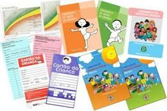
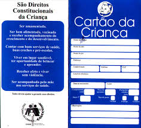
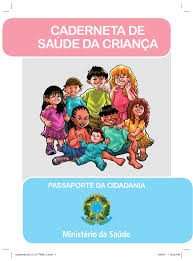
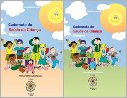
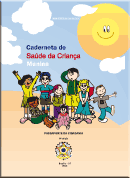

- Leonardo Pires dos Santos
- santos.leonardo2@hotmail.com
Caderneta de Saúde
Você sabia que o Cartão da Criança foi estabelecido para documentar o processo de crescimento e sistematizar o calendário de imunizações, padronizando, as ações no território nacional de crianças de zero a cinco anos?



Nesse instrumento constava o gráfico de crescimento, o quadro de vacinas e poucas informações sobre a saúde da criança. Era confeccionado e distribuído pelos estados somente aos serviços públicos de saúde. Ao longo dos anos, foi reformulado sendo incorporados aspectos como o desenvolvimento neuropsicomotor e cidadania para integrar as ações de promoção da saúde da criança, com a monitorização do crescimento e desenvolvimento que são focos da atenção primária à saúde.
Em 2005, o MS revisou o Cartão da Criança e publicou a Caderneta de Saúde da Criança (CSC) que fez mais que alterar os conteúdos do cartão da criança, criou uma nova concepção para esse tipo de instrumento. A CSC descentralizou a vigilância à saúde que antes era centrada na condição nutricional e vacinal da criança, criando um instrumento de vigilância integral transformando o cenário da atenção à saúde da criança.
Desde então, a CSC passou a ser disponibilizada gratuitamente aos municípios para todas as crianças nascidas em todo território nacional, a partir do ano de 2005, seja em instituições públicas ou privadas integrantes ou não do Sistema Único de Saúde (SUS). A distribuição passou a ser realizada ainda na maternidade permitindo a continuidade da atenção prestada em caso de deslocamento entre os estados brasileiros e parte do MERCOSUL.

Depois de sua implantação a CSC foi atualizada em outras duas ocasiões: 2007 e 2009, por isso, os serviços de saúde ainda irão conviver com os três modelos por um tempo. Veja a baixo quais foram as principais alterações registradas na CSC:

Na primeira reformulação, no ano de 2007, a CSC foi intitulada de Passaporte da Cidadania somava 82 páginas e, seguiu uma tendência mundial, ser única para meninos (parte azul) e meninas (parte rosa). Essa nova versão foi necessária para acompanhar a alteração e adoção das novas curvas de crescimento da Organização Mundial da Saúde no ano anterior. Foram inseridos gráficos de peso x idade e de altura x idade, informações sobre o registro civil de nascimento, direito dos pais e da criança, os primeiros dias de vida do recém-nascido e dicas mais detalhadas sobre o desenvolvimento, alimentação, amamentação e desmame.
Em 2009, foi publicada a terceira e mais atual versão da CSC, denominada de “a nova caderneta” com o objetivo de acompanhar a saúde, o crescimento e o desenvolvimento da criança, do nascimento até os 9 anos. A partir dos 10 anos a caderneta a ser utilizada é a Caderneta de Saúde do Adolescente. Uma das principais mudanças apresentadas foi o fato de estar disponível em dois modelos, um para as meninas e outro para os meninos, em razão dos gráficos de crescimento, peso e altura por idade, diferirem em relação ao sexo. Além de estar dividida em duas partes: a primeira para uso do cuidador e a segunda, para uso dos profissionais da saúde. Também foram acrescentados conteúdos como o guia básico para o acompanhamento de crianças com diagnósticos de síndrome de Down e autismo, tabelas do Índice de Massa Corporal (IMC) e cuidados com a pressão arterial.

Essa publicação surgiu mais completa, por conter um maior número de informações, tornou-se mais abrangente e ampliou suas possibilidades como instrumento de vigilância e educação. A CSC deve ser um documento indispensável em todo atendimento da criança, por se constituir em um importante instrumento para o acompanhamento da saúde infantil, desde que os registros sejam realizados de forma adequada, do nascimento até os 10 anos de idade. Assim, a CSC deve ficar sob responsabilidade da mãe e ser levada em todas as consultas para acompanhamento e anotações cada vez que a criança comparecer ao serviço de saúde para consulta seja por doença ou por visita. Caracterizando-a como um documento que obtém e lança informações sobre a saúde da criança.
Todos os cenários da atenção à saúde necessitam responsabilizar-se pela verificação e o preenchimento da CSC, os primeiros registros sobre o parto, informações sobre o recém-nascido e dados de identificação da criança e da sua família devem ser realizados ainda na maternidade. Após a alta, os registros subsequentes devem ser efetuados pelos profissionais responsáveis pelo acompanhamento da criança, nos serviços de atenção primária à saúde ou em outros eventualmente.
Espera-se que os profissionais sejam incentivadores das mães/ famílias para que as mesmas se empoderem sobre o conteúdo da CSC e tornarem-se parceiros (profissionais, serviços e famílias) co-responsáveis no cuidado da saúde infantil e na efetivação da caderneta para a vigilância à saúde integral da criança.
Agora que você conheceu mais sobre a CSC no contexto da puericultura na atenção básica, o que acha de treinar o seu preenchimento em situações práticas?
Na tela Espaço do Cursista você terá acesso a situações clínicas que simulam o uso da CSC nas consultas de rotina da Puericultura. Em seu treinamento, você deverá responder as três primeiras situações clínicas na ordem apresentadas, sendo a quarta contabilizada para avaliação e, obtenção do certificado do curso de Atualização em Caderneta de Saúde da Criança.